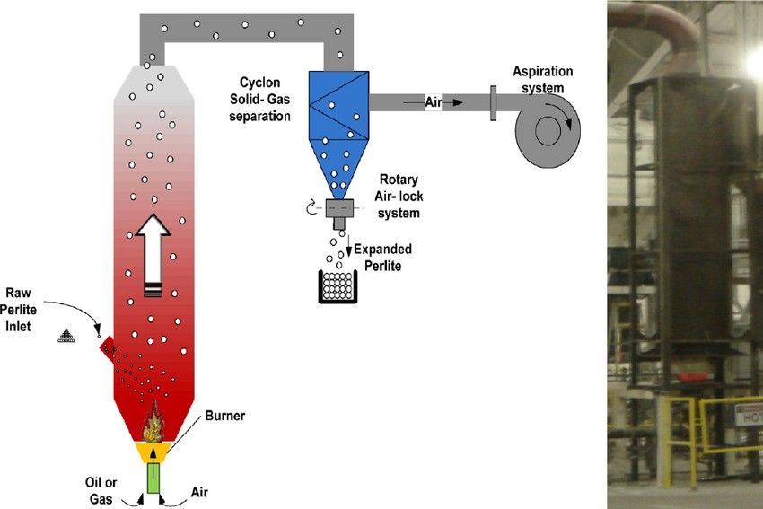

Industrial Furnace System Optimization
Production engineering in a live operating environment
This project focused on improving a 14-furnace perlite expansion system that was experiencing instability, manual intervention, and recurring startup waste.

Mechanical and controls improvements that held up in production
I approached the system as an integrated process rather than a series of isolated issues. The first step was improving visibility into the process by installing sampling points and collecting operating data. That made it possible to identify the true drivers of instability and waste instead of relying on assumptions.
- Stabilized performance across a 14-furnace industrial system
- Identified an undersized rotary airlock as a shutdown-causing bottleneck
- Designed and deployed a zero-waste automated startup sequence
I tuned interacting control loops in the proper sequence and implemented density-based feedback control to improve consistency and reduce reliance on manual intervention. In parallel, I traced one of the major operational issues to an undersized rotary airlock that was creating backpressure and contributing to shutdown events.
I also developed an automated startup protocol from the ground up, including testing, parameter development, and implementation logic. The result was elimination of startup material loss and approximately $200K in annual savings. I additionally scoped and executed approximately $500K in capital upgrades tied to feed-system improvements, vendor coordination, installation, and commissioning.